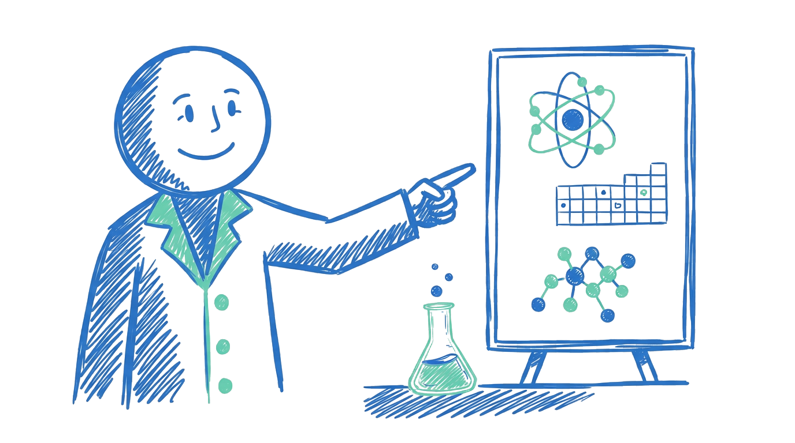

دوپینگ شیمی از یک دغدغه ساده شروع شد: خیلی از دانشآموزها ساعتها برای شیمی وقت میگذارند، اما چون مسیر یادگیری روشن نیست، نتیجهای که میگیرند به اندازه تلاششان نیست.
ما سعی کردهایم کلاسها شبیه یک گفتوگوی واقعی باشد؛ اول ابهام را پیدا کنیم، بعد مفهوم را ساده کنیم و در نهایت با تمرین و آزمون، یادگیری را تثبیت کنیم.
هر مدرس روی بخشی تمرکز دارد که بیشتر در آن تجربه و روش آموزشی ساخته است.
محاسبات و شیمی دوازدهم
برای سوالهای عددی، روش حل را مرحلهبهمرحله میچیند تا دانشآموز بداند از کجا شروع کند.
مفاهیم پایه و شیمی دهم
مباحث پایه را با مثالهای ساده و قابل لمس توضیح میدهد تا شروع شیمی سخت به نظر نرسد.
برنامهریزی آموزشی و کنکور
روی مسیر کلی یادگیری، آزمونها و جمعبندیها نظارت میکند تا دورهها پراکنده پیش نروند.
لازم نیست همه مسیر را یکباره بدانی. یک دوره مناسب انتخاب کن، اولین جلسه را ببین و بعد قدمبهقدم جلو برو.
دیدن دورهها